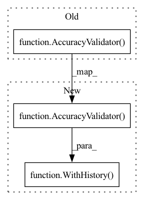

Pattern ID :24911

Before Change
class TestForwardOnlyValidator(unittest.TestCase):
def test_forward_only_validator(self):
mv = ForwardOnlyValidator()
validator = AccuracyValidator()
adapter, datasets = get_dann(validator=validator)
output = mv.run(
adapter=adapter,
datasets=datasets,
After Change
class TestForwardOnlyValidator(unittest.TestCase):
def test_forward_only_validator(self):
mv = ForwardOnlyValidator()
validator = WithHistory(AccuracyValidator())
adapter, datasets = get_dann(validator=validator)
output = mv.run(
adapter=adapter,
datasets=datasets,
In pattern: SUPERPATTERN
Frequency: 3
Non-data size: 3
Instances
Fragment ID: 76735466
Project Name: kevinmusgrave/pytorch-adapt
Commit Name: c24689af323fcf23cf16ef0cd5311b8f08737098
Time: 2021-11-30
Author: tkm45@cornell.edu
File Name: tests/meta_validators/test_forward_only.py
M Class Name: TestForwardOnlyValidator
N Class Name: TestForwardOnlyValidator
M Method Name: test_forward_only_validator(1)
N Method Name: test_forward_only_validator(1)
M Parent Class: unittest.TestCase
N Parent Class: unittest.TestCase
M File Name: tests/meta_validators/test_forward_only.py
N File Name: tests/meta_validators/test_forward_only.py
M Start Line: 12
M End Line: 12
N Start Line: 12
N End Line: 12
'>
Before Change
for forward_with_validator in [True, False]:
mv = ReverseValidator()
if forward_with_validator:
validator = AccuracyValidator()
saver = Saver(folder=TEST_FOLDER)
else:
validator, saver = None, None
forward_adapter, datasets = get_dann(validator=validator, saver=saver)
After Change
for forward_with_validator in [True, False]:
mv = ReverseValidator()
if forward_with_validator:
validator = WithHistory(AccuracyValidator())
saver = Saver(folder=TEST_FOLDER)
else:
validator, saver = None, None
forward_adapter, datasets = get_dann(validator=validator, saver=saver)
'>
Fragment ID: 76735464
Project Name: kevinmusgrave/pytorch-adapt
Commit Name: c24689af323fcf23cf16ef0cd5311b8f08737098
Time: 2021-11-30
Author: tkm45@cornell.edu
File Name: tests/meta_validators/test_reverse.py
M Class Name: TestReverseValidator
N Class Name: TestReverseValidator
M Method Name: test_reverse_validator(1)
N Method Name: test_reverse_validator(1)
M Parent Class: unittest.TestCase
N Parent Class: unittest.TestCase
M File Name: tests/meta_validators/test_reverse.py
N File Name: tests/meta_validators/test_reverse.py
M Start Line: 32
M End Line: 32
N Start Line: 32
N End Line: 32
'>
Before Change
]
)
validator4 = AccuracyValidator()
self.assertRaises(FileNotFoundError, lambda: saver.load_validator(validator3))
self.assertRaises(FileNotFoundError, lambda: saver.load_validator(validator4))
After Change
)
)
validator4 = WithHistory(AccuracyValidator())
self.assertRaises(FileNotFoundError, lambda: saver.load_validator(validator3))
self.assertRaises(FileNotFoundError, lambda: saver.load_validator(validator4))
'>
Fragment ID: 76735465
Project Name: kevinmusgrave/pytorch-adapt
Commit Name: 8e13f24e95ba2d4c525b9af9f1e733fd74777d12
Time: 2021-11-30
Author: tkm45@cornell.edu
File Name: tests/adapters/test_save_and_load.py
M Class Name: TestSaveAndLoad
N Class Name: TestSaveAndLoad
M Method Name: test_save_and_load(1)
N Method Name: test_save_and_load(1)
M Parent Class: unittest.TestCase
N Parent Class: unittest.TestCase
M File Name: tests/adapters/test_save_and_load.py
N File Name: tests/adapters/test_save_and_load.py
M Start Line: 105
M End Line: 112
N Start Line: 112
N End Line: 122